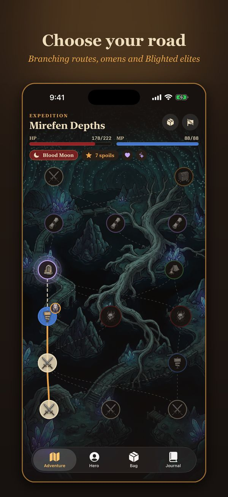
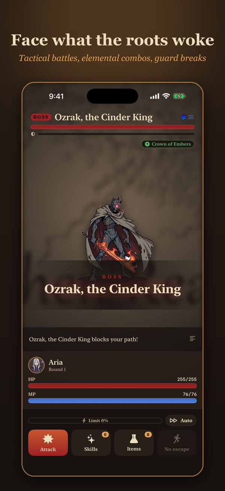
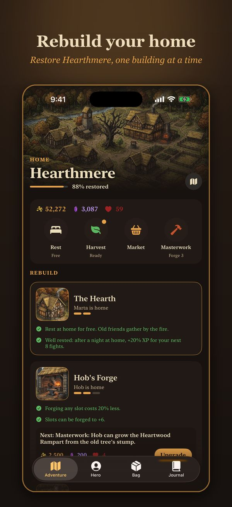
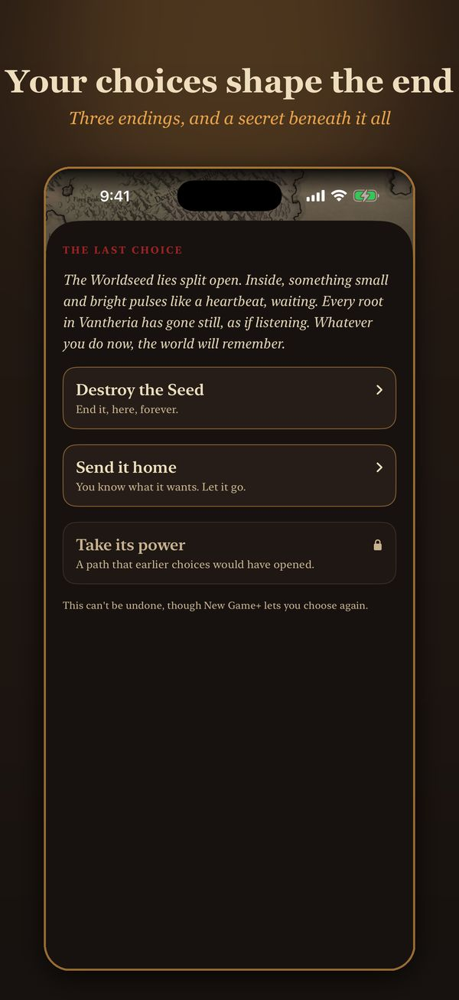
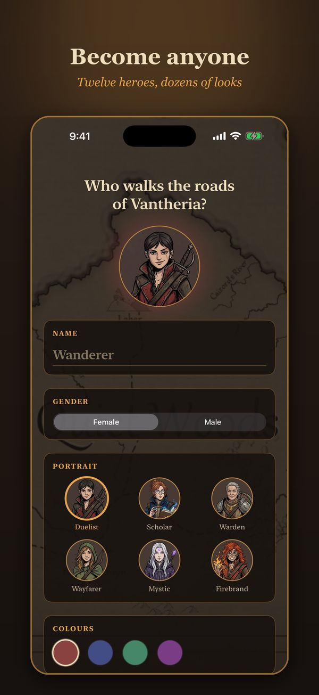
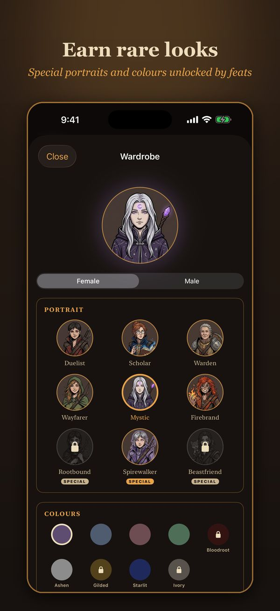

The Hushwood's Guardian has woken in a rage. Garland's toll gang at Fourways smuggles barrels of red sap. The druids of the Whispering Hollow speak with one stolen voice. Every trail leads back to a root that should not exist.
Vantheria is a turn-based fantasy RPG for iPhone and iPad, with a full story told across seven chapters.






What's inside
- Seven lands, fourteen dungeons and a hidden final chapter, each with its own bosses, music and story
- Choices that matter: decide the fate of the people you meet, and reach one of three endings
- Branching expeditions past wild fights, Blighted elites, camps, ruins and treasure
- Tactical battles: read the enemy's next move, chain elemental combos, break its guard
- 21 classes across five tiers, with subclasses and secret classes, and every skill you learn is yours to keep
- Relics, rolled loot, gear sets, a forge, and crafting from monster parts
- Rebuild your home village and see who comes home
- Companions, campfire moments, and bonds that grow
- The Spire of Echoes: an endless climb with boons and a weekly challenge
- Story, Normal and Hard difficulty, in English, Spanish and German
No ads. No accounts. No energy timers. Plays offline, and your saves sync with iCloud.